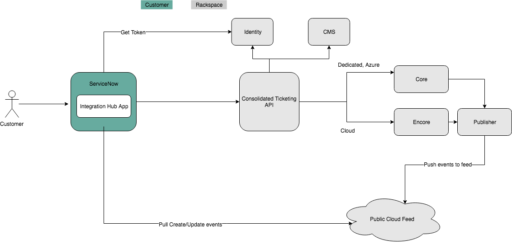
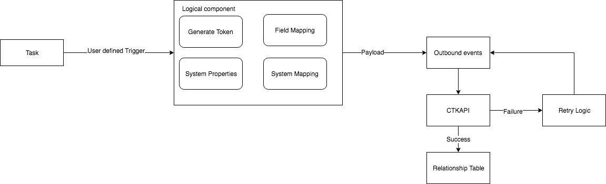
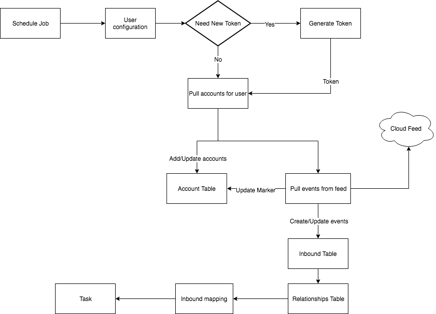

Overview#
Rackspace Integration Hub consists of the following components:
- Dashboards – Contains reports on Ticketing Integration status.
- Configuration
- Identity Access – Contains users that have access to Rackspace portals and tickets. These are manually created by the customer.
- Pull Setup – Contains information regarding how to pull Rackspace ticket data.
- Events Setup – Contains inbound and outbound events with Rackspace. These are pre-configured.
- Properties Setup – Properties needed to support this application.
- Mapping
- Outbound Field Mappings - Contains the field mappings between your outbound incidents and Rackspace tickets. You configure these mappings.
- Inbound Field Mappings – Contains the field mappings between your inbound incidents and Rackspace tickets. You configure these mappings.
- System Value Mappings – Contains the data mappings that translate your values for a field to the Rackspace value for the field. You configure these mappings.
- MetaData
- Accounts – List of the accounts associated with the customer.
- Cat/Subcat/Product – List of valid Category/Subcategory/Product combinations.
- Inbound
- Inbound Events – Contains the types of events that your instance receives from Rackspace. These are pre-configured with Incident Creation and Incident Update events.
- Inbound Table – Contains data related to the events sent from Rackspace to your ServiceNow instance.
- Outbound
- Outbound Events - Types of events that your instance receives from Rackspace. This is pre-configured with Incident Creation and Incident Update categories.
- Outbound Field Mappings - Field mappings between your Incidents and Rackspace tickets. You configure these mappings.
- Outbound Transactions - Data related to the events sent from your ServiceNow instance to Rackspace.
- Outbound Failed Transactions – Logs of events that were not successfully processed.
- Outbound Relation Source Destination Logs – Relationship between your Incident number and the Rackspace ticket number.
- Web Services
- REST Message – REST Messages needed to send create and update Rackspace tickets. This is pre-configured with Create and Update categories.
- Scripts & Logs
- Script Includes – Scripts needed to support this application.
- Business Rules – Business rules needed to support this application.
- Scheduled Jobs – Scheduled jobs needed to support this application.
- System Log - Log messages related to Integration Hub.
- Properties – Properties needed to support this application.
The Integration Hub includes the following Script Includes:
- GTIHelper – Helper class for Integration Hub.
- GTIKHelperTransport
The Integration Hub includes the following Transform Scripts:
- Inbound - Processes inbound events from Rackspace.
The Integration Hub consists of the following Transform Maps:
- Inbound
The Integration Hub consists of the following Business Rules:
- Check number of results value
- Clear token on user or password change
- Field Mapping Correlation ID
- Field Mapping Integrity
- Field Mapping Type Integrity
- Populate Display name (outbound events)
- Populate Display name (inbound events)
- Transaction run
- Trigger check v2.0
The Integration Hub consists of the following Scheduled Jobs:
- Feed Pull (5 Min) – Data pull from Rackspace event feed for ticket updates
- Feed Pull (10 Min) - Data pull from Rackspace event feed for ticket updates
- Feed Pull (15 Min) - Data pull from Rackspace event feed for ticket updates
- Process Fail Event – Reprocesses one failed event per run of the job
- Process All Failed Events – Reprocesses all failed events per run of the job
- Pull Categories/Subcat – Data pull from Rackspace for Category and Subcategory values
Architecture#
The following diagram shows how the Rackspace Integration Hub interacts with other systems.
Outbound flow#
The following diagram shows the Rackspace Integration Hub outbound flow.
Inbound flow#
The following diagram shows the Rackspace Integration Hub inbound flow.
